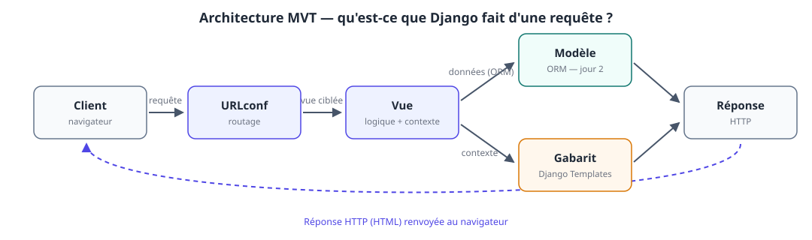
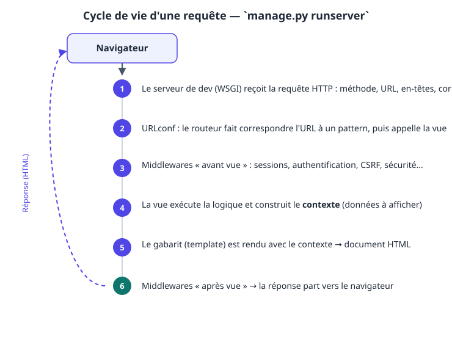
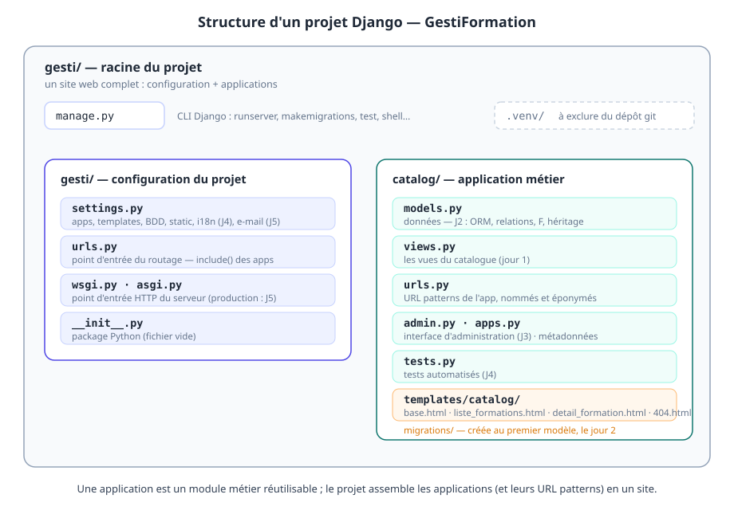

À la fin de la journée, les participants sont capables de :
- installer et configurer un environnement de développement Django (venv, dépendances) ;
- décrire l'architecture MVT et le cycle de vie d'une requête HTTP ;
- structurer un projet Django (projet / applications) et comprendre
settings.py; - déclarer des URL patterns (simples, convertisseurs, expressions régulières), nommés et inversables ;
- écrire des vues fonctionnelles qui produisent des réponses HTTP ;
- construire un jeu de pages avec Django Templates : héritage, filtres, balises, fichiers statiques.
Livrable de la journée
Un site fonctionnel GestiFormation avec :
- une page d'accueil, un catalogue de formations et un détail de formation ;
- une page 404 personnalisée ;
- un thème CSS commun via un gabarit de base ;
- un serveur de développement actif avec rechargement automatique.
💡 Choix pédagogique : les données du catalogue sont des littéraux Python pour le jour 1 (bloc 3 Dawan : « renvoyer du contenu simple »). Le jour 2, les mêmes pages seront branchées sur l'ORM sans changer URL ni gabarits — c'est la meilleure démonstration du découplage MVT.
| Heure | Séquence | Blocs programme |
|---|---|---|
| 09h00 – 09h15 | Accueil, tour de table, vérification du matériel | — |
| 09h15 – 10h30 | B1 — Découvrir Django, installation | Bloc 1 |
| 10h30 – 10h45 | Pause | |
| 10h45 – 11h30 | B2 — Structure d'un site Django | Bloc 2 |
| 11h30 – 13h00 | B3 — URLs & vues + atelier | Bloc 3 |
| 13h00 – 14h00 | Déjeuner | |
| 14h00 – 16h15 | B4 — Templates + atelier | Bloc 4 |
| 16h15 – 16h30 | Pause | |
| 16h30 – 17h00 | Démonstrations, synthèse, preview du jour 2 | — |
1.1. Qu'est-ce que Django ?
Django est un framework web Python, open source, « batteries incluses », né en 2003 dans la rédaction de LWN (Adrian Holovaty, Simon Willison). Son credo : convention over configuration — Django choisit pour vous, et documente comment faire déchoixir.
Ce qui est fourni « out of the box » :
| Brique | Rôle | Jour de la formation |
|---|---|---|
| URL router | routage des URL vers les vues | J1 |
| Templates | rendu HTML côté serveur | J1 |
| ORM + migrations | accès aux données, évolution du schéma | J2 |
| Forms / ModelForms | formulaires, validation, anti-CSRF | J2–J3 |
| Admin | interface d'administration auto-générée | J3 |
| Auth | utilisateurs, groupes, permissions, sessions | J3 |
| i18n | traduction des interfaces | J4 |
| E-mails, signals, middlewares | mécanismes avancés | J5 |
Versions. Django suit un cycle de sorties annuelles avec une version LTS (Long Term Support, support ~4 ans) tous les deux ans.
💡 Règle de formation : on se forme sur une LTS. Ici, Django 5.2 LTS. Les stagiaires retrouveront la même logique sur les versions récentes ; la LTS est aussi ce qu'on déconseille en production pour des sites internes.
Documentation. docs.djangoproject.com est la référence — c'est même l'une des meilleures documentations du monde Python. Habitude à installer dès le jour 1 : quand on doute, on lit la doc, pas Stack Overflow.
1.2. L'écosystème des frameworks web Python
Le stagiaire développeur Python a déjà croisé Flask ou FastAPI. Situer Django évite le questionnement pendant toute la semaine :
| Framework | Positionnement | Point fort | Quand le choisir |
|---|---|---|---|
| Django | complet, prescriptif | ORM, admin, auth, sécurité | applications web complètes (admin, formulaires, comptes) |
| Flask | micro-framework, modulaire | légèreté, liberté | petites apps, API internes, protos |
| FastAPI | moderne, async, typé | performances, OpenAPI auto | API JSON, microservices, ML |
| Pyramid | flexible, indifférent aux briques | longévité, modularité | gros systèmes legacy |
| Starlette | micro async | asynchrone pur | bases de FastAPI, API temps réel |
💡 Argument à donner : Django n'est pas « plus lent que Flask » en raison de ses briques — il fait plus de choses. Pour une app d'administration métier (notre cas), Flask exigerait de réécrire l'admin, l'auth, les forms… c'est-à-dire de réinventer Django.
1.3. MVC, MVT : le schéma de fonctionnement
Les stagiaires connaissent MVC (Model-View-Controller). Django s'en inspire mais renomme les briques — source classique de confusion.

| MVC (classique) | Django | Contenu |
|---|---|---|
| Model | Model | classes Python décrivant les données + ORM |
| Controller | View (vue) | fonction/classe qui reçoit la requête, traite, répond |
| View (vue) | Template (gabarit) | le document HTML rendu |
Moyen mnémotechnique : Django View = « le cerveau », Template = « la bouche », Model = « la mémoire ». (Et la « vue » du stagiaire, c'est le template — on s'y fait.)
Le cycle de vie détaillé d'une requête sous le serveur de développement :

Points à faire démontrer (pas seulement expliquer) :
runserverest un vrai serveur WSGI minimaliste, pas un contournement : la chaîne est identique à la production, moins le serveur applicatif (Gunicorn/uvicorn — J5) ;- les middlewares sont traversés en aller-retour ; on les verra agir concrètement le jour 3 (sessions, auth) et le jour 5 (CORS, compression) ;
- une requête = une réponse, aucune mémoire d'une page à l'autre (étatless) : l'état vit dans la session (cookie) et la base — idée centrale à faire absorber.
1.4. Installation et environnement
Matériel type : Linux/macOS ou Windows (WSL2 recommandé) ; VS Code ou PyCharm.
Extensions VS Code utiles (à installer au fil du besoin, pas tout d'un coup) : Python, Pylance, Django (surlignage des tags {% %}), Ruff (lint).
⚠️ Piège Windows : utiliser
python(paspy) si un ancien Python 32 bits est dans le PATH ; vérifierpython --versionavant de créer le venv.
🛠️ Atelier 1 — Environnement de développement (30 min)
Consignes : créer un environnement de travail pour GestiFormation, sans encore créer le projet (ce sera l'atelier du bloc 2).
# 0. Vérifier Python (≥ 3.11 recommandé)
python --version
# 1. Répertoire de travail
mkdir -p ~/projets/gestiformation && cd ~/projets/gestiformation
# 2. Environnement virtuel
python -m venv .venv
# 3. L'activer
source .venv/bin/activate # bash / zsh (Linux, macOS)
# .venv\Scripts\activate # Windows (cmd)
# .venv\Scripts\Activate.ps1 # Windows (PowerShell)
# 4. Installer Django (LTS) et vérifier
pip install "Django>=5.2,<6.0"
django-admin --version # → Django 5.2.x
# 5. Geler les dépendances (fichier à committer)
pip freeze > requirements.txt
# 6. Hygiène git minimale
git init
printf '.venv/\n__pycache__/\n*.pyc\n.env\n' > .gitignore
git add -A && git commit -m "Bootstrap environnement GestiFormation"
Checklist de fin d'atelier
- [ ]
django-admin --versionaffiche Django 5.2.x dans le venv actif ; - [ ]
requirements.txtcontient Django ; - [ ] dépôt git initialisé avec
.gitignorecorrect ; - [ ] le stagiaire sait réactiver le venv dans un nouveau terminal.
⚠️ Si
django-adminn'est pas trouvé après activation : le venv n'est pas activé (which django-admindoit pointer dans.venv).
Le serveur de développement. Première rencontre avec runserver (on créera le projet juste après) :
python manage.py runserver
À faire démontrer au tableau, en direct :
- l'autoreloader : modifier un fichier
.py→ le serveur se redémarre tout seul ; DEBUG=True: les erreurs s'affichent dans le navigateur avec trace complète — un luxe de développement, jamais en production ;ALLOWED_HOSTS: le serveur refuse les hôtes inconnus, même en dev (l'erreur est explicite, elle servira d'exemple) ;- l'URL
http://127.0.0.1:8000/: le serveur répondDisallowedHostou une page vide selon le projet — normal, aucune URL n'est encore déclarée.
💡 Réflexe pro à installer :
Ctrl+Carrête le serveur proprement.runservern'est jamais un serveur de production (limité à un thread,DEBUGouvert, pas de sécurité durcie). Nous en reparlerons le jour 5.
Autres commandes à faire connaître (la CLI manage.py est la porte d'entrée de Django) :
| Commande | Effet |
|---|---|
python manage.py check |
vérifie la cohérence du projet (à lancer après chaque changement de settings) |
python manage.py showurls (via django-extensions) |
liste les URL patterns actives |
python manage.py shell |
shell Python préchargé du projet (parfait pour expérimenter) |
python manage.py test |
lanceur de tests (jour 4) |
pip install django-extensions |
boîtes à outils très utile en dev (show_urls, shell_plus…) |
pip install django-debug-toolbar |
interface de debug dans le navigateur (barre latérale avec requêtes SQL, temps de réponse, etc.) |
💡 Optionnel mais apprécié :
pip install django-extensionspuis ajouter"django_extensions"dansINSTALLED_APPS. La commandeshow_urls(liste des URLs + vues) devient un réflexe de debug.
2.1. Projet ≠ application
La distinction qui structure tout Django, et tout notre support :
- un projet = un site web complet : configuration (
settings.py), racine du routage, point d'entrée WSGI/ASGI. C'est le contenant. - une application (app) = un module métier réutilisable : modèles, vues, gabarits, admin, tests sur un seul domaine. C'est la brique.
💡 Exemple à donner : l'app
catalogdu GestiFormation pourrait, théoriquement, être branchée dans le site d'une autre boîte qui vend aussi des formations. C'est le test de réutilisabilité : une app ne connaît pas le projet, le projet connaît les apps.
Pour GestiFormation, prévoyons dès aujourd'hui deux apps (la seconde naîtra le jour 2) :
| App | Domaine | Jour |
|---|---|---|
catalog |
formations, sessions, compétences | J1–J2 |
inscriptions |
inscriptions, factures, documents | J2–J3 |
2.2. Anatomie du projet

manage.py — point d'entrée CLI du projet. Tout passe par python manage.py <commande>.
settings.py — le tableau de bord du site. Les éléments que nous toucherons pendant la semaine :
| Clé | Rôle | Jour |
|---|---|---|
SECRET_KEY |
signe cookies, sessions, tokens — jamais dans le git | J1 (notion) |
DEBUG |
mode développement (erreurs dans le navigateur) | J1 |
ALLOWED_HOSTS |
hôtes autorisés | J1 (notion), J5 (production) |
INSTALLED_APPS |
les apps du site (les nôtres et les apps Django) | J1 |
MIDDLEWARE |
la chaîne de middlewares | J1 (notion), J3–J5 (pratique) |
TEMPLATES |
moteur de gabarits, APP_DIRS=True = chercher dans <app>/templates/ |
J1 |
STATIC_URL |
préfixe des fichiers statiques | J1 |
DATABASES |
base (SQLite par défaut — parfait pour la semaine) | J2 |
DEFAULT_AUTO_FIELD |
type des PK auto-incrémentées | J2 |
LANGUAGE_CODE / USE_I18N |
langue, traduction | J4 |
EMAIL_BACKEND / EMAIL_HOST |
envoi de mails | J5 |
STATICFILES_STORAGE |
service des statics en prod | J5 |
urls.py (du projet) — racine du routage ; on y greffe les apps avec include().
wsgi.py / asgi.py — le point d'entrée que le serveur applicatif (Gunicorn, uvicorn…) appelle en production. Le runserver fait la même chose en dev.
🛠️ Atelier 2 — Créer le projet et l'app catalog (20 min)
# dans ~/projets/gestiformation, venv activé
django-admin startproject gesti . # package « gesti », racine du repo
python manage.py startapp catalog # application métier
python manage.py check # → System check identified no issues (0 silenced)
Puis, dans gesti/settings.py, déclarer l'app :
INSTALLED_APPS = [
'django.contrib.admin',
'django.contrib.auth',
'django.contrib.contenttypes',
'django.contrib.sessions',
'django.contrib.messages',
'django.contrib.staticfiles',
# --- nos applications métier (ordre peu important, lisibilité oui) ---
'catalog.apps.CatalogConfig',
# outils de développement
'django_extensions',
'debug_toolbar',
]
Vérifier, puis lancer le serveur et ouvrir http://127.0.0.1:8000/ :
python manage.py check
python manage.py runserver
⚠️ Piège classique n°1 : app oubliée dans
INSTALLED_APPS→ImproperlyConfiguredou gabarits introuvables, sans message explicite. Réflexe : après tout ajout de configuration,python manage.py check.💡
startappcrée un squelette (apps.py,models.py,views.py,urls.py,tests.py,admin.py). C'est du code Python standard — les stagiaires peuvent l'ouvrir, l'expliquer entre eux avant qu'on le fasse.
3.1. Le routeur : URL patterns
Une URLconf est une liste ordonnée de (pattern, vue) : Django parcourt la liste et la première correspondance gagne.
Trois styles de pattern, tous au programme Dawan (« simples et par expressions régulières ») :
from django.contrib import admin
from django.urls import path, re_path
# ne fonctionne pas depuis la racine
# import views
from . import views
# espace de nom des urls de cette app à appeler dans les templates et/ou les vues
app_name = "catalog"
urlpatterns = [
# ces chemins sont la continuation de la partie du gesti/urls.py
# un vue est un CALLABLE (fonction ou classe)
path('', views.accueil, name='accueil'),
path('formations/', views.liste_formations, name="liste-formations"),
# l'attribut name fait le lien entre l'url et son invocation dans un template et/ou dans une vue
path('formations/<int:pk>', views.detail_formation, name="detail-formation"),
# exemple de route matchée par une regex
# django réutilise le mécnisme de nommage de groupe de capture du module
# re en python (?P<name>) pour dynamiser l'identifiant
# non-obstant, la valeur capturée est une str !!!
# re_path utilise re.match ==> capture au début de la cible
# ==> écrire des regex stricte : ^<regex>$
# re_path("^formations/(?P<pk>[0-9]{,2})$", views.detail_formation)
]
Point clé — les convertisseurs :
| Pattern | Accepte | Exemple qui passe |
|---|---|---|
<pk> |
toute chaîne (sauf /) |
42, abc, 4a |
<int:pk> |
entiers seulement | 42 |
<slug:pk> |
caractères alphanum. + - + _ |
django-initiation |
<uuid:pk> |
UUID canonique | 9f86d081-… |
<str:pk> |
n'importe quoi, même / |
⚠️ rarement voulu |
⚠️ Piège classique n°2 : l'ordre des patterns.
path('formations/<pk>/', …)placé avantpath('formations/nouveautes/', …)avalera l'URL « nouveautés » avecpk='nouveautes'. Règle : du plus spécifique au plus générique.
Éponymie (namespace). app_name = 'catalog' + name='…' sur chaque pattern → les URLs de l'app sont adressées partout comme catalog:detail-formation. Bénéfices immédiats :
- on peut renommer l'URL sans casser le code (les gabarits et vues utilisent le nom, jamais le chemin) ;
- deux apps peuvent avoir un pattern du même
namesans collision ; python manage.py show_urls(viadjango-extensions) liste les patterns nommés — indispensable en debug.
3.2. Les URLs du projet (racine)
from django.contrib import admin
from django.urls import path, include
# pas d'import relatif ni absolu car le dossier racine n'est PAS un package
# import catalog.urls
urlpatterns = [
# ce chemin permet de consulter les urls de
# l'application admin déjà installé dans settings INSTALLED_APPS
path('admin/', admin.site.urls),
# TO-DO: générer la liste urls de l'application catalog
# => catalog/urls.py
path('', include('catalog.urls')),
]
# gestion != d'urlpatterns
# pour le voir ==> DEBUG = False
handler404 = 'catalog.views.page_introuvable'
handler500 = 'catalog.views.interne'
💡
include(): permet d'inclure les patterns d'une app EXTERNE dans le routeur du projet. 💡include(): on ne « monte » que la préfixe. Les patterns decatalog/urls.pyvivent sous''ici — mais si on incluait souspath('fr/', include('catalog.urls')), tout le catalogue basculerait sous/fr/…sans toucher à une seule URL de l'app. C'est l'une des plus belles propriétés du découpage apps/projets.
3.3. Les vues fonctionnelles
Une vue est une fonction Python (request, *args, **kwargs) → réponse HTTP.
from django.shortcuts import render
from django.http import HttpRequest, HttpResponse
# --- données fictives pour le jour 1 (elles seront remplacées par l'ORM le jour 2) ---
FORMATIONS = [
{'code': 'PY-101', 'nom': 'Django : initiation',
'prix': 1890.0, 'duree': 3, 'public': 'Développeurs', 'nouveaute': False},
{'code': 'PY-102', 'nom': 'Django : approfondissement',
'prix': 2490.0, 'duree': 1, 'public': '', 'nouveaute': False},
{'code': 'DA-201', 'nom': 'Data analysis with Python',
'prix': 2190.0, 'duree': 5, 'public': 'Analystes', 'nouveaute': True},
]
# Create your views here.
def accueil(request: HttpRequest) -> HttpResponse:
"""
Page d'accueil - réponse brute
demande un objet request de type HttpRequest
et retourne un objet HttpResponse
"""
return HttpResponse(
"""<h1>GestiFormation</h1>
<p>Gestion d'un organisme de formation : catalogue, sessions, inscriptions.</p>
<a href="/formations/">Voir le catalogue</a>""",
content_type="text/html",
status=200)
def liste_formations(request: HttpRequest) -> HttpResponse:
"""
liste des formations
utilise render, qui injecte le contexte dans un fichier HTML "template"
les templates doivent être insérés dans <app>/templates/<app>/<xxxx>.html
"""
return render(request, "catalog/liste_formations.html" , {"formations": FORMATIONS})
def detail_formation(request: HttpRequest, pk: int) -> HttpResponse:
"""
détail d'une formation indexée par un id, par défaut l'indice de la liste
"""
return render(request, "catalog/detail_formation.html" , {"formation": FORMATIONS[int(pk) - 1]})
def page_introuvable(request, exception):
"""
page rendue par le handler404 du projet
le handler 404 demande un 2ème paramètre exception dans la vue
"""
return render(request, "catalog/404.html", status=404)
def interne(request):
return render(request, "catalog/500.html", status=500)
L'objet request — ce qu'on y trouve (le stagiaire peut l'inspecter dans le shell ou dans une vue de debug) :
| Attribut | Contenu |
|---|---|
request.method |
'GET', 'POST', … |
request.path |
l'URL normalisée (sans la query string) |
request.GET |
dictionnaire-like de la query string |
request.POST |
dictionnaire-like du corps POST (formulaires — J2) |
request.headers |
en-têtes HTTP (User-Agent, Referer, …) |
request.META |
variables d'environnement du serveur (REMOTE_ADDR, …) |
request.user |
l'utilisateur courant (J3 — AnonymousUser tant que non connecté) |
La réponse — les trois types que nous croiserons cette semaine :
| Type | Usage |
|---|---|
HttpResponse(html, content_type=…, status=…) |
réponse brute |
JsonResponse(obj) |
réponse JSON (jour 5, API) |
render(request, template, context) |
le raccourci le plus utilisé : gabarit + contexte + request |
⚠️ Toujours passer
requestàrender()— c'est ce qui permet aux middlewares (CSRF, messages) de fonctionner dans le gabarit.
HTTP en 5 minutes (à projeter pendant l'atelier, pas avant) :
| Élément | Valeurs utiles ici |
|---|---|
| Méthodes | GET (lecture), POST (création/mutation), PUT (remplacement), DELETE |
| Codes | 200 OK · 301/302 redirection · 404 introuvable · 400 requête invalide · 500 erreur serveur |
| En-têtes | Content-Type, Location (redirect), Set-Cookie (sessions) |
🛠️ Atelier 3 — Vues du catalogue (45 min)
Consignes : faire marcher les 3 vues avec les données littérales ci-dessus. On ne construit pas encore les gabarits (bloc 4) — pour vérifier, utiliser HttpResponse brut sur la liste :
Progression attendue :
accueil→HttpResponsebrut → ouvrirhttp://127.0.0.1:8000/;- ajouter
liste_formations+ son pattern →http://127.0.0.1:8000/formations/; - ajouter
detail_formation+ son pattern avec<int:pk>→http://127.0.0.1:8000/formations/2/; - taper
http://127.0.0.1:8000/formations/99/→ la page 500 brute de Django (pas la nôtre — c'est normal, les gabarits n'existent pas encore) ; - tester le pattern regex (
/formations/12345/→ 404, car[0-9]{1,4}).
Checklist
- [ ]
python manage.py check→ 0 issue ; - [ ]
http://127.0.0.1:8000/→ page d'accueil ; - [ ]
http://127.0.0.1:8000/formations/→ liste HTML brute ; - [ ]
http://127.0.0.1:8000/formations/1/et/2/→ détail ; - [ ]
http://127.0.0.1:8000/formations/99/→ 404 ; - [ ] le stagiaire peut expliquer pourquoi
pkarrive dansdetail_formation(le pattern le capture, le routeur le passe en**kwargs).
⚠️ Piège classique n°3 :
formations/<int:pk>/sans barre finale → l'utilisateur tapehttp://…/formations(sans/) → 404 au lieu de redirection. C'est le rôle deAPPEND_SLASH = True(défaut Django) de corriger automatiquement ; comprendre le mécanisme évite 90 % des « pourquoi ça marche sur une URL mais pas sur l'autre ».💡 Vérification du découplage URL : demander à un binôme de changer l'URL publique de
detail-formation(ex.path('formations/<int:pk>/', …)→path('catalogue/<int:pk>/', …)) — le code des vues ne change pas d'une ligne. C'est l'effet de l'éponymie.
4.1. Pourquoi des gabarits ?
Séparer la logique (les vues) du préésentationnel (le HTML). Concrètement :
- le designer peut toucher au HTML sans toucher au Python ;
- la vue peut évoluer (ORM, API, cache) sans toucher au HTML ;
- le HTML est reusable : un
<template>de « carte formation » sert dans la liste, le détail, un e-mail (J5).
Le moteur Django (configuré dans TEMPLATES, APP_DIRS=True) cherche les gabarits dans chaque app installée sous <app>/templates/<app>/. C'est ce qui nous donne automatiquement catalog/templates/catalog/*.html sans configuration.
💡
DIRSvsAPP_DIRS:DIRS= chemins absolus du projet (partageables entre apps) ;APP_DIRS=templates/<app>/dans chaque app. Pour GestiFormation, on n'utilise queAPP_DIRS: chaque app est autonome.⚠️ Conséquence directe — comment on nomme les gabarits : avec
APP_DIRS, un gabarit est référencé relativement au dossiertemplates/de l'app, donc avec le préfixe du sous-dossier. Le fichiercatalog/templates/catalog/base.htmls'appellecatalog/base.html— dansrender()et dans{% extends %}. Écrire{% extends "base.html" %}provoque unTemplateDoesNotExist(Django cherchecatalog/templates/base.html). C'est l'erreur n°1 des stagiaires en templates ; le règle d'or : le nom du gabarit = son chemin aprèstemplates/.
4.2. Le contexte et l'expression
render(request, template, context) passe un dictionnaire au gabarit. Dans le gabarit, on lit les clés avec {{ nom_de_clé }}.
La résolution du point (.) dans les expressions suit un ordre précis :
- clé de dictionnaire :
{{ formation.code }}siformationest un dict ; - attribut :
{{ formation.nom }}si c'est une instance ; - méthode sans argument :
{{ now }}→now(); - index de liste :
{{ formations.0.nom }}(astuce peu connue, très utile en debug).
⚠️ Piège classique n°4 :
{{ ma_variable }}n'affiche rien (niNone, ni'') si la variable n'existe pas dans le contexte. Django ne lève jamais d'exception sur un contexte manquant (saufstring_if_invalid). Réflexe debug : vérifier lecontextpassé par la vue avant de suspecter le gabarit.
4.3. Filtres — les plus utiles de la semaine
Syntaxe : {{ valeur|filtre }}, chaînables {{ v|f1|f2 }}.
| Filtre | Effet | Exemple GestiFormation |
|---|---|---|
upper / lower / title |
casse | {{ formation.code|upper }} |
length |
longueur (str, liste, dict) | {{ formations|length }} formations |
first / last |
premier / dernier élément | {{ competences|first }} |
floatformat:2 |
format décimal | {{ formation.prix|floatformat:2 }} € |
date:"d/m/Y" |
format date | {{ session.debut|date:"d/m/Y" }} |
time:"H:i" |
format heure | {{ session.heure_debut|time:"H:i" }} |
default:"txt" |
valeur par défaut | {{ formation.public|default:"Tous publics" }} |
join:", " |
jointure de liste | {{ competences|join:", " }} |
slice:":3" |
tranche de liste | {{ formations|slice:":3" }} (3 premières) |
get_item:"cle" (Django 5+) |
accès à une clé dans un dict | {{ meta|get_item:"ville" }} |
linebreaks |
texte → HTML (paragraphes) | {{ formation.resume|linebreaks }} |
safe |
ne pas échapper le HTML | {{ html_brut|safe }} ⚠️ danger XSS |
escape |
échapper (défaut implicite) | {{ texte|escape }} |
⚠️ Sécurité par défaut : Django échappe automatiquement tout ce qui passe dans
{{ }}(protection XSS).|safedésactive cette protection — ne l'utiliser que sur du HTML qu'on a soi-même produit (pas du contenu utilisateur).
4.4. Balises — le jeu de construction
| Balise | Usage |
|---|---|
{% if %} / {% elif %} / {% else %} / {% endif %} |
conditions |
{% for x in seq %} … {% empty %} … {% endfor %} |
boucles ; {% empty %} si séquence vide |
{% extends "catalog/base.html" %} |
héritage (gabarit parent) |
{% block nom %} … {% endblock %} |
emplacement surchargeable |
{% super %} |
inclure le contenu du block parent |
{% include "partiel.html" %} |
insérer un sous-gabarit (avec contexte courant) |
{% url 'catalog:nom' args %} |
URL inversée (toujours, jamais de URL en dur) |
{% load static %} puis {% static "css/base.css" %} |
URL des fichiers statiques |
{% now "d/m/Y" %} |
date du jour au rendu |
{% csrf_token %} |
token anti-CSRF — obligatoire sur chaque <form method="post"> (J2–J3) |
{% if user.is_authenticated %} |
test d'authentification (J3) |
forloop — variables disponibles dans {% for %} :
| Variable | Valeur |
|---|---|
forloop.counter |
index 1-based |
forloop.counter0 |
index 0-based |
forloop.revcounter |
depuis la fin |
forloop.first / forloop.last |
booléen |
forloop.parentloop |
boucle parente (boucles imbriquées) |
4.5. Héritage de gabarits — le cœur du bloc 4
Le pattern : un gabarit de base (layout, nav, footer, CSS) + des gabarits enfants qui n'écrivent que leur contenu.
catalog/templates/catalog/
├── base.html ← layout global (héritage)
├── liste_formations.html ← {% extends "catalog/base.html" %}
├── detail_formation.html ← {% extends "catalog/base.html" %}
├── 404.html ← page d'erreur (hérite aussi de catalog/base.html)
└── 500.html ← erreur interne (visible en prod seulement)
💡 Conseil formateur : faire écrire
base.htmlen dernier (après liste + détail), pas en premier. Les stagiaires découvrent l'héritage quand ils ont besoin de dédupliquer, pas avant — l'abstraction arrive après la duplication, pas l'inverse.
4.6. Fichiers statiques
STATIC_URL = 'static/' (défaut). Les fichiers sont servis par runserver en dev (via django.contrib.staticfiles).
⚠️ Piège classique n°5 : oublier
{% load static %}dans le gabarit qui utilise{% static %}→ la balise est inconnue, l'URL est rendue littérale ({% static %}affiché tel quel dans le HTML).
Production (jour 5) : runserver ne sert pas les statics quand DEBUG=False. On utilisera WhiteNoise (middleware, STATICFILES_STORAGE) ou un CDN — à préparer le jour 5.
🛠️ Atelier 4 — Construire l'interface (75 min)
Consignes : créer les gabarits et le CSS qui rendent les 3 pages + la 404.
4.6.1 — catalog/templates/catalog/base.html
{% load static %}
<!DOCTYPE html>
<html lang="fr">
<head>
<meta charset="utf-8">
<meta name="viewport" content="width=device-width, initial-scale=1">
{# le contenu du block spécifié dans le template écrasera la valeur par défaut qui est ici GestiFormation #}
<title>{% block titre %}GestiFormation{% endblock titre %}</title>
{# 1. le chemin css/base.css est constant quel que soit l'environnement #}
{# 2. {% static %} sait comment trouver cette ressource #}
{# 3. {% load static %} utilise STATIC_URL pour fabriquer l'url absolu vers cette ressource quel que soit l'environnement #}
<link rel="stylesheet" href="{% static 'css/base.css' %}">
</head>
<body>
<header class="entete">
<nav class="nav">
<a class="logo" href="">GestiFormation</a>
<ul>
<li><a href="{% url 'catalog:liste-formations' %}">Catalogue</a></li>
<li>???? — <a href="#">Déconnexion</a></li>
<li><a href="#">Connexion</a></li>
</ul>
</nav>
</header>
<main class="contenu">
{% block contenu %}{% endblock contenu %}
</main>
<footer class="pied">
<p>{% now "d/m/Y" %} — GestiFormation, site de démonstration</p>
</footer>
</body>
</html>
💡 Le block
titreest surchargé par chaque page — c'est l'exemple minimal d'héritage utile (au-delà de{% block contenu %}).
4.6.2 — catalog/templates/catalog/liste_formations.html
{% extends "catalog/base.html" %}
{% block titre %}Catalogue - GestiFormation{% endblock titre %}
{% block contenu %}
<section class="catalogue">
<h1>Catalogue des formations</h1>
{# on utilise des FILTRES pour utiliser des transformation sur les variables du templates #}
<p class="chiffre">{{ formations|length }} formation{{ formations|length|pluralize }} au catalogue.</p>
<table class="tableau">
<thead>
<tr>
<th>#</th>
<th>Code</th>
<th>Intitulé</th>
<th>Public</th>
<th>Durée</th>
<th class="prix-col">Tarif HT</th>
</tr>
</thead>
<tbody>
{% for formation in formations %}
<tr>
{# forloop est une variable locale au for pour manipuler les itérations #}
{# forloop.counter est le pendant de enumerate en python #}
<td>{{ forloop.counter }}</td>
<td><code> {{ formation.code }} </code></td>
<td>
{# catalog:xxxx est lié à la variable app_name="catalog" de urls.py #}
<a class="lien-nom"
href="{% url 'catalog:detail-formation' forloop.counter %}">
{{ formation.nom|title }}
</a>
{% if formation.nouveaute %}
<span class="badge badge-nouveau">Nouveau</span>
{% endif %}
</td>
<td>{{ formation.public|default:"Tout publics" }}</td>
<td>
{{ formation.duree }} jour{{ formation.duree|pluralize }}
</td>
<td class="prix-col"> {{ formation.prix|floatformat:2 }} €</td>
</tr>
{# empty sera affichée si la structure à itérer est vide #}
{% empty %}
<tr><td colspan="6" class="vide">Aucune formation publiée pour le moment.</td></tr>
{% endfor %}
</tbody>
</table>
</section>
{% endblock contenu %}
⚠️ Piège :
forloop.counter0(0-based) pour l'index dans l'URL,forloop.counter(1-based) pour l'affichage. Les mélanger décale toutes les URLs d'un cran.💡 Le
{% empty %}est la clause « liste vide » du{% for %}— à utiliser systématiquement, c'est le reflet dutry/exceptPython.
4.6.3 — catalog/templates/catalog/detail_formation.html
{% extends "catalog/base.html" %}
{% block titre %}{{ formation.nom }} - GestiFormation{% endblock titre %}
{% block contenu %}
<article class="formation">
<p class="retour"><a href="{% url 'catalog:liste-formations' %}">← Retour au catalogue</a></p>
<header class="entete-formation">
<h1>{{ formation.nom|title }}</h1>
{% if formation.nouveaute %}<span class="badge badge-nouveau">Nouveau</span>{% endif %}
</header>
{# include permet de réutiliser un sous élement de template appelé 'partial' #}
{% include "catalog/partial_formation.html" with formation=formation %}
<section class="objectifs">
<h2>Objectifs pédagogiques</h2>
<ul>
<li>Modéliser et développer une application web complète avec Django ;</li>
<li>Maîtriser le cycle MVT, l'ORM, les formulaires et l'admin ;</li>
<li>Préparer le déploiement d'une application en production.</li>
</ul>
</section>
<section class="competences">
<h2>Compétences visées</h2>
<p>
</p>
</section>
<footer class="action">
<!-- J2 : formulaire d'inscription (ModelForm) -->
<a class="btn" href="#">S'inscrire à cette formation</a>
</footer>
</article>
{% endblock contenu %}
💡 À faire remarquer :
formation.competencesn'existe pas encore dans les données littérales — Django affiche rien (pas d'erreur). Ajouter'competences': ['ORM', 'MVT', 'Templates']à l'une des formations pour voir la boucle fonctionner.
4.6.4 — catalog/templates/catalog/404.html
{% extends "catalog/base.html" %}
{# block.super affiche la valeur du bloc sur le gabarit hérité #}
{% block titre %}Page introuvable - {{ block.super }}{% endblock titre %}
{% block contenu %}
<div class="erreur">
<h1>404 — page introuvable</h1>
<p>La page demandée n'existe pas ou a été déplacée.</p>
<a class="btn" href="{% url "catalog:accueil" %}">Retour à l'accueil</a>
</div>
{% endblock contenu %}
💡 À faire démontrer : taper
http://127.0.0.1:8000/une-url-inexistante/→ notre page 404 (pas celle de Django), carhandler404est déclaré dansgesti/urls.py.
4.6.5 — catalog/templates/catalog/500.html
{% extends "catalog/base.html" %}
{% block titre %}Erreur interne — {{ block.super }}{% endblock %}
{% block contenu %}
<div class="erreur">
<h1>500 — erreur interne</h1>
<p>Une erreur est survenue côté serveur. L'équipe a été prévenue.</p>
<a class="btn" href="{% url 'catalog:accueil' %}">Retour à l'accueil</a>
</div>
{% endblock %}
⚠️ Deux particularités à faire connaître : 1.
handler500impose une signaturedef interne(request):— sansexception(vérifié parmanage.py check, erreururls.E007si on s'y trompe) ; 2. la page 500 personnalisée n'est affichée qu'en production (DEBUG=False) : avecDEBUG=True, Django affiche sa page d'erreur détaillée. On peut donc la créer sans pouvoir la « voir » au bureau.
4.6.6 — catalog/static/css/base.css
:root {
--fond: #f8fafc;
--encre: #1f2937;
--encre-douce: #6b7280;
--primaire: #4f46e5;
--primaire-fonce: #3730a3;
--bordure: #e2e8f0;
--blanc: #ffffff;
--succes: #0f766e;
--alerte: #d97706;
}
* { box-sizing: border-box; }
body {
margin: 0;
font-family: system-ui, -apple-system, "Segoe UI", sans-serif;
color: var(--encre);
background: var(--fond);
line-height: 1.6;
}
/* ————— En-tête ————— */
.entete {
background: var(--primaire);
color: var(--blanc);
padding: 0.75rem 1.5rem;
}
.nav {
display: flex;
align-items: center;
justify-content: space-between;
max-width: 1100px;
margin: 0 auto;
}
.logo {
font-weight: 700;
font-size: 1.15rem;
color: var(--blanc);
text-decoration: none;
}
.nav ul {
display: flex;
gap: 1.25rem;
list-style: none;
margin: 0;
padding: 0;
}
.nav a { color: var(--blanc); text-decoration: none; opacity: 0.9; }
.nav a:hover { opacity: 1; text-decoration: underline; }
/* ————— Contenu ————— */
.contenu {
max-width: 1100px;
margin: 2rem auto;
padding: 0 1.5rem;
}
h1 { font-size: 1.75rem; margin-bottom: 0.5rem; }
h2 { font-size: 1.25rem; margin-top: 2rem; }
.chiffre { color: var(--encre-douce); margin-bottom: 1.5rem; }
/* ————— Tableau ————— */
.tableau {
width: 100%;
border-collapse: collapse;
background: var(--blanc);
border: 1px solid var(--bordure);
border-radius: 8px;
overflow: hidden;
}
.tableau th, .tableau td {
padding: 0.65rem 0.9rem;
text-align: left;
border-bottom: 1px solid var(--bordure);
}
.tableau th {
background: #eef2ff;
font-weight: 600;
font-size: 0.85rem;
text-transform: uppercase;
letter-spacing: 0.03em;
color: var(--encre-douce);
}
.tableau tr:last-child td { border-bottom: none; }
.tableau tr:hover td { background: #f1f5f9; }
.prix-col { font-variant-numeric: tabular-nums; text-align: right; }
.vide { text-align: center; color: var(--encre-douce); padding: 2rem; }
/* ————— Liens & badges ————— */
.lien-nom { font-weight: 600; color: var(--primaire); text-decoration: none; }
.lien-nom:hover { text-decoration: underline; }
code {
background: #eef2ff;
padding: 0.1em 0.35em;
border-radius: 4px;
font-size: 0.9em;
}
.badge {
display: inline-block;
font-size: 0.7rem;
font-weight: 700;
padding: 0.15em 0.5em;
border-radius: 999px;
vertical-align: middle;
margin-left: 0.4rem;
}
.badge-nouveau { background: #d1fae5; color: var(--succes); }
/* ————— Fiche détail ————— */
.retour { margin-bottom: 1rem; }
.retour a { color: var(--encre-douce); text-decoration: none; }
.retour a:hover { color: var(--primaire); }
.entete-formation { display: flex; align-items: center; gap: 0.75rem; flex-wrap: wrap; }
.fiche {
display: grid;
grid-template-columns: repeat(auto-fit, minmax(180px, 1fr));
gap: 1rem;
background: var(--blanc);
border: 1px solid var(--bordure);
border-radius: 8px;
padding: 1.25rem;
margin: 1.5rem 0;
}
.fiche dt {
font-size: 0.75rem;
font-weight: 600;
text-transform: uppercase;
letter-spacing: 0.05em;
color: var(--encre-douce);
margin-bottom: 0.2rem;
}
.fiche dd { margin: 0; font-size: 1rem; }
.tarif { font-size: 1.3rem; font-weight: 700; color: var(--primaire); }
/* ————— Compétences ————— */
.competence {
display: inline-block;
background: #eef2ff;
color: var(--primaire-fonce);
padding: 0.25em 0.7em;
border-radius: 6px;
font-size: 0.88rem;
margin: 0.15rem 0.1rem;
}
/* ————— Bouton ————— */
.btn {
display: inline-block;
background: var(--primaire);
color: var(--blanc);
padding: 0.7rem 1.6rem;
border-radius: 8px;
text-decoration: none;
font-weight: 600;
transition: background 0.15s;
}
.btn:hover { background: var(--primaire-fonce); }
/* ————— Erreur 404 ————— */
.erreur { text-align: center; padding: 4rem 1rem; }
.erreur h1 { font-size: 3rem; color: var(--primaire); }
.erreur a { margin-top: 1.5rem; }
/* ————— Pied de page ————— */
.pied {
text-align: center;
color: var(--encre-douce);
font-size: 0.85rem;
padding: 1.5rem;
border-top: 1px solid var(--bordure);
margin-top: 3rem;
}
⚠️ Piège : le dossier s'appelle
static(pascss/ouassets/) et est à la racine de l'app (catalog/static/css/base.css), pas danstemplates/.
Checklist de fin d'atelier
- [ ]
http://127.0.0.1:8000/→ page d'accueil stylée (en-tête, pied, CSS chargés) ; - [ ]
http://127.0.0.1:8000/formations/→ tableau avec badge « Nouveau » sur la formation 3 ; - [ ]
http://127.0.0.1:8000/formations/3/→ fiche détaillée, lien retour fonctionnel ; - [ ]
http://127.0.0.1:8000/inexistante/→ notre page 404 (pas celle de Django) ; - [ ] le stagiaire peut expliquer : pourquoi
{% url 'catalog:…' %}et non une URL en dur ; - [ ] le stagiaire peut identifier 3 filtres utilisés et leur effet ;
- [ ]
git add -A && git commit -m "J1 : site GestiFormation — 3 pages, thème, 404"fait.
Ce qui est en place
~/projets/gestiformation/
├── .venv/ # venv actif
├── .gitignore # .venv/, __pycache__/, .env
├── requirements.txt # Django 5.2.x
├── manage.py
├── gesti/
│ ├── __init__.py
│ ├── settings.py # INSTALLED_APPS += catalog
│ ├── urls.py # /admin/, / → catalog, handler404/500
│ ├── asgi.py
│ └── wsgi.py
└── catalog/
├── __init__.py
├── apps.py
├── models.py # vide — rempli le jour 2
├── views.py # accueil, liste, detail, 404, 500
├── urls.py # 5 patterns nommés (dont 1 regex)
├── admin.py # vide — jour 3
├── tests.py # vide — jour 4
├── static/css/base.css
└── templates/catalog/
├── base.html
├── liste_formations.html
├── detail_formation.html
├── 404.html
└── 500.html
Les réflexes installés
| Réflexe | Pourquoi |
|---|---|
python manage.py check après chaque changement de settings |
détecte les incohérences sans lancer le serveur |
{% url 'app:nom' %} et jamais d'URL en dur dans le HTML |
renommer une URL ne casse rien |
python manage.py show_urls (django-extensions) |
debug routage en 2 secondes |
{% load static %} dans tout gabarit qui utilise {% static %} |
évite l'URL littérale |
|floatformat:2 pour les montants, |default:"…"`` pour les optionnels | affichage soigné sansif` dans la vue |
|
| Commit git à chaque étape fonctionnelle | l'historique raconte l'avancement du projet |
Pièges vus aujourd'hui (à récapituler oralement)
- App oubliée dans
INSTALLED_APPS→ImproperlyConfiguredflou ; - Ordre des patterns : le plus spécifique avant le plus générique ;
forloop.counter(1-based) vsforloop.counter0(0-based) ;{% load static %}oublié → URL littérale dans le HTML ;{{ variable }}n'affiche rien si absente du contexte (pas d'exception) ;|safedésactive l'échappement XSS — ne pas utiliser sur du contenu utilisateur ;{% extends "base.html" %}alors que le gabarit est danscatalog/templates/catalog/→TemplateDoesNotExist: le nom = le chemin aprèstemplates/(catalog/base.html) ;- page 404 « qui ne marche pas » : avec
DEBUG=True, Django affiche sa page de debug et ignorehandler404— à vérifier avecDEBUG=False.
Preview du jour 2 — blocs 5 & 6
Le jour 2, les données littérales de catalog/views.py disparaissent au profit de l'ORM :
- définition des modèles
Formation,Session,Client(relationsForeignKey,ManyToMany) ; makemigrations/migrate— la base SQLite est créée et peuplée ;- remplacement des listes Python par des requêtes ORM (
select_related,prefetch_related) ; - introduction de F objects (trier les sessions par capacité restante) et héritage de modèle (Document → Contrat) ;
- premiers forms (validation côté serveur) en amont des ModelForms du jour 3.
💡 Message de clôture : « Les 3 pages que vous voyez ne changeront ni d'URL, ni de gabarit quand on branchera l'ORM. C'est exactement le découplage que Django promettait. »
# Environnement
python -m venv .venv && source .venv/bin/activate
pip install "Django>=5.2,<6.0" django-extensions
pip freeze > requirements.txt
# Projet & app
django-admin startproject gesti .
python manage.py startapp catalog
# Serveur & debug
python manage.py check
python manage.py runserver
python manage.py runserver 0.0.0.0:8000 # accessible depuis le réseau local
python manage.py shell # shell préchargé du projet
# Git
git init && git add -A && git commit -m "Bootstrap"
git add -A && git commit -m "J1 : site GestiFormation"